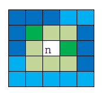

Project Euler 196
题目
Prime triplets
Build a triangle from all positive integers in the following way:
| \(1\) | ||||||||||
| \(\color{red}{2}\) | \(\color{red}{3}\) | |||||||||
| \(4\) | \(\color{red}{5}\) | \(6\) | ||||||||
| \(\color{red}{7}\) | \(8\) | \(9\) | \(10\) | |||||||
| \(\color{red}{11}\) | \(12\) | \(\color{red}{13}\) | \(14\) | \(15\) | ||||||
| \(16\) | \(\color{red}{17}\) | \(18\) | \(\color{red}{19}\) | \(20\) | \(21\) | |||||
| \(22\) | \(\color{red}{23}\) | \(24\) | \(25\) | \(26\) | \(27\) | \(28\) | ||||
| \(\color{red}{29}\) | \(30\) | \(\color{red}{31}\) | \(32\) | \(33\) | \(34\) | \(35\) | \(36\) | |||
| \(\color{red}{37}\) | \(38\) | \(39\) | \(40\) | \(\color{red}{41}\) | \(42\) | \(\color{red}{43}\) | \(44\) | \(45\) | ||
| \(46\) | \(\color{red}{47}\) | \(48\) | \(49\) | \(50\) | \(51\) | \(52\) | \(\color{red}{53}\) | \(54\) | \(55\) | |
| \(56\) | \(57\) | \(58\) | \(\color{red}{59}\) | \(60\) | \(\color{red}{61}\) | \(62\) | \(63\) | \(64\) | \(65\) | \(66\) |
| \(\dots\) | \(\dots\) | \(\dots\) |
Each positive integer has up to eight neighbours in the triangle.
A set of three primes is called a prime triplet if one of the three primes has the other two as neighbours in the triangle.
For example, in the second row, the prime numbers \(2\) and \(3\) are elements of some prime triplet.
If row \(8\) is considered, it contains two primes which are elements of some prime triplet, i.e. \(29\) and \(31\).
If row \(9\) is considered, it contains only one prime which is an element of some prime triplet: \(37\).
Define \(S(n)\) as the sum of the primes in row \(n\) which are elements of any prime triplet. Then \(S(8)=60\) and \(S(9)=37\).
You are given that \(S(10000)=950007619\).
Find \(S(5678027) + S(7208785)\).
解决方案
如果要求第\(S(N)\)，为确保第\(N\)行的在质数三元组的数都能够被找到，第\(N-2\)行到第\(N+2\)的所有质数都需要每局出来。假设第\(N-2\)行的第一个质数为\(L\)，第\(N+2\)行的最后一个质数为\(R\)。
第一个问题：找到\(L,R\)之间的所有质数。
不难发现，虽然\(L,R\)是\(O(n^2)\)级别的，但是\(R-L\)却是\(O(n)\)级别的。另外，\(L,R\)之间的合数一定被\(\lfloor\sqrt{R}\rfloor\)以内的质因数解决。这启发了我们用两次质数筛法解决：
- 先用一般的埃氏筛法找到\(\lfloor\sqrt{R}\rfloor\)以内的质数。
- 将第一步筛出来的质数用于筛掉\(L,R\)之间的合数。这里的实现需要注意一些细节，如数组的偏移量是\(L\)；如果是用质数\(p\)来筛合数，那么要从\(\lceil\dfrac{L}{p}\rceil\cdot p\)开始筛起。
第二个问题：求解原问题答案。
对于第\(N\)行的每一个数质数\(n\)而言，以它为中心的\(5\times5\)方格内的数都是它的判断对象，如下图（绿色为内圈，蓝色为外圈）：

\(n\)为答案的条件满足这两个之一：内圈中有两个是质数；内圈和外圈中一对有公共边或角（如上图深色部分）的数都是质数。
因此为了解决第二个问题，可以先将这一对有公共边和角的数的相对坐标全都预处理出来，直接判断。
本问题还有一些细节，实现时需要注意。
代码
1 |
|